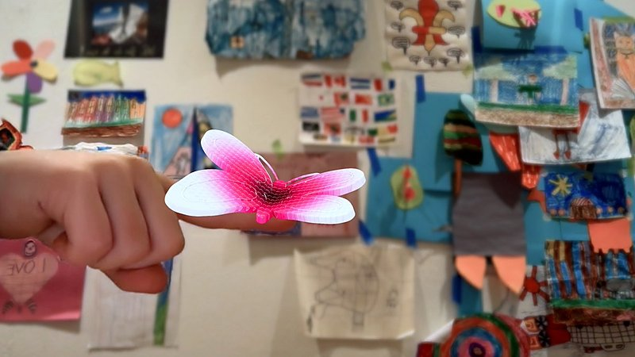
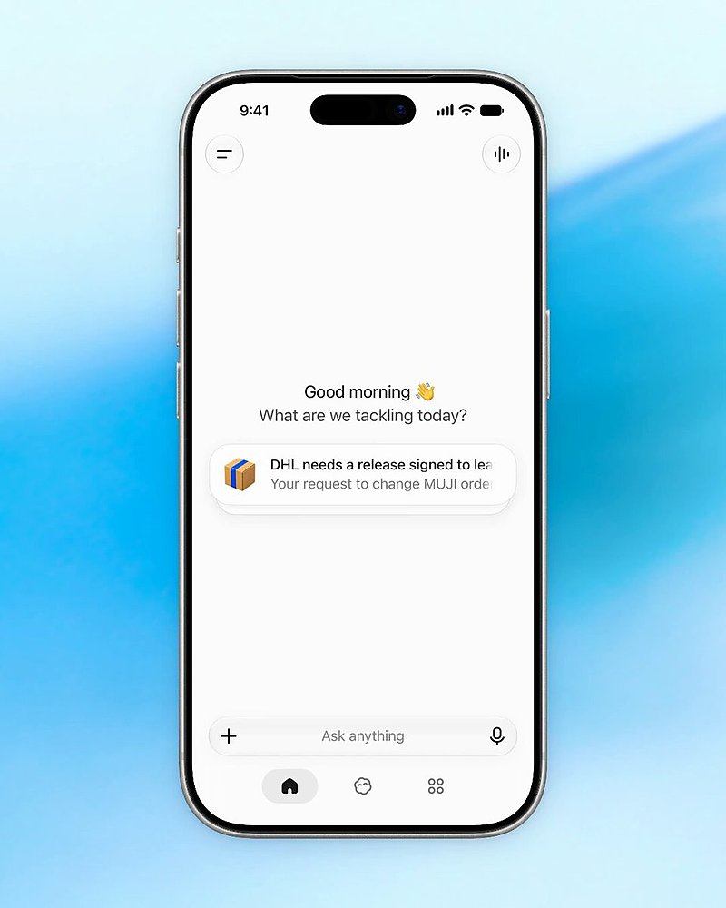

AI 日报 · 11月21日
AI 助手走进工作空间与桌面任务
OpenAI 将 Space 推向 Plus 用户，Google 为 Gemini Mac 加入计算机操作；Builder 讨论个人代理与软件创作。
协作空间
桌面代理
个人软件
开源工具
5
Builder 动态
3
上榜仓库
2
官方更新
今日要点
RSS 精选
AI 前线关注模型研发路线
Builder 动态
个人代理、界面与软件创作
Josh Woodward｜Gemini 在 Mac 执行任务
Google 产品负责人介绍 Gemini Mac 应用的计算机操作能力；可跨本地文件、应用与网页处理任务。

Thibault Sottiaux｜ChatGPT 移动端新体验
OpenAI 团队成员介绍新的移动导航：Dot 拥有独立标签，Codex、Projects、Images 等功能可固定在标签栏；目前先向部分合资格用户开放。

Amjad Masad｜一个提示词构建个人代理
Replit CEO 分享用一个提示词构建类似 Muse 的个人代理，强调个人代理的创建门槛正在降低。
Peter Yang｜比较两款日常模型
Peter Yang 分享对 Gemini 4 Neon 与 Opus 5.5 的个人测试：前者在写作与表达上接近或更好，后者在其测试中的 3D 与设计任务上仍占优。
GitHub Trending
代理接口与技能库上榜
11 月 21 日 GitHub Trending 快照；星标和 Fork 数取自同日 GitHub API。
今日思考
从聊天到可操作的工作空间
官方更新把 AI 能力延伸到协作页面和桌面操作，Builder 则讨论个人代理与软件创作。评估这些能力时，应看具体任务完成率、可追溯操作和用户接管体验。
今天可做
选一个跨应用的重复任务，记录每一步输入、结果和人工确认点，再决定是否交给代理。
参考来源